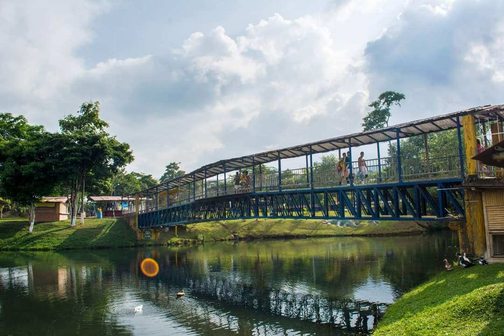
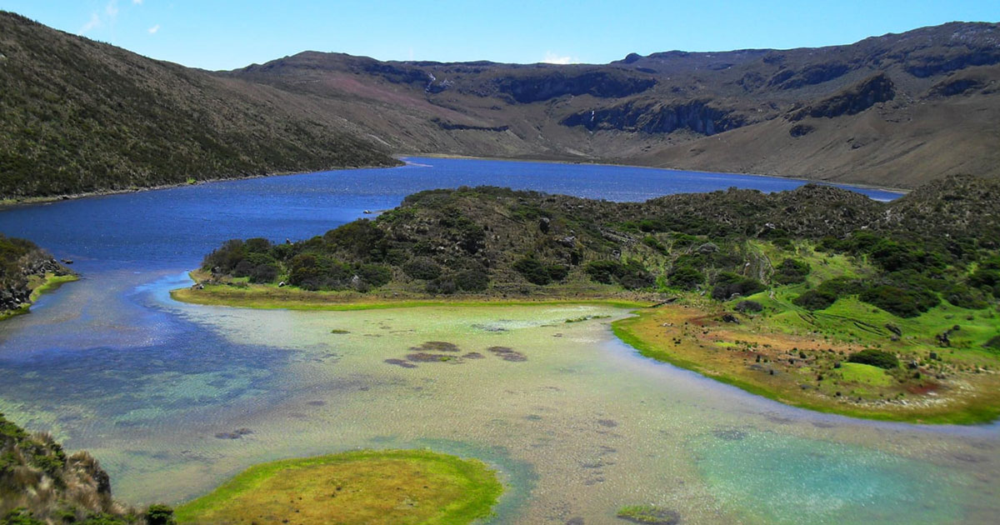
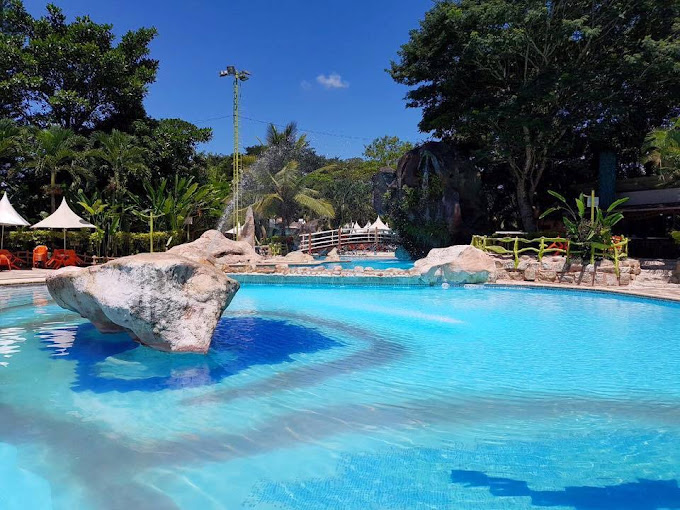

Paraísos Acuáticos

Lago De La Pradera
El Lago de La Pradera es un lago artificial en Dosquebradas, Colombia, que se ha convertido en un popular espacio de recreación y esparcimiento.

La Laguna Del Otún
La Laguna del Otún es un embalse natural en el Parque Nacional Natural Los Nevados, en Colombia. Es un atractivo turístico y un humedal Ramsar que se alimenta del deshielo del nevado Santa Isabel.

Chorros De Don Lolo
Los Chorros de Don Lolo son una cascada de 40 metros de altura en Santa Rosa de Cabal, Risaralda, Colombia. Se encuentran en un bosque húmedo secundario y son un destino popular para los amantes de la naturaleza.

Balneario Los Farallones
El balneario Los Farallones es un centro recreativo de la Virginia, Risaralda. Este balneario ofrece una variedad de instalaciones y servicios diseñados para el disfrute de toda la familia.